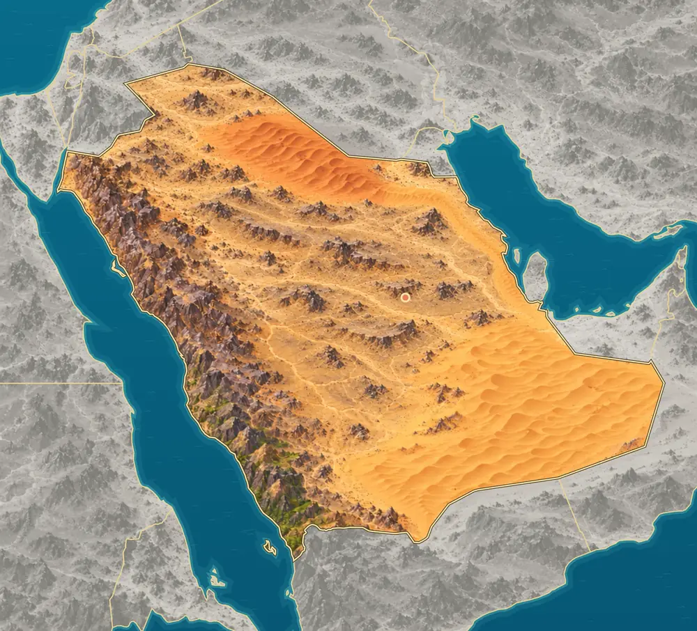
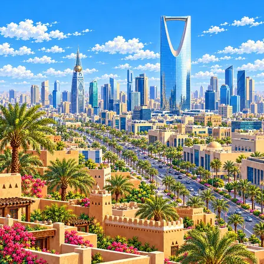
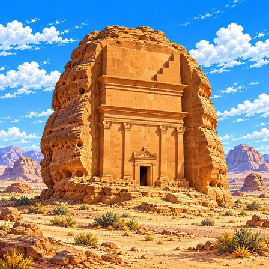
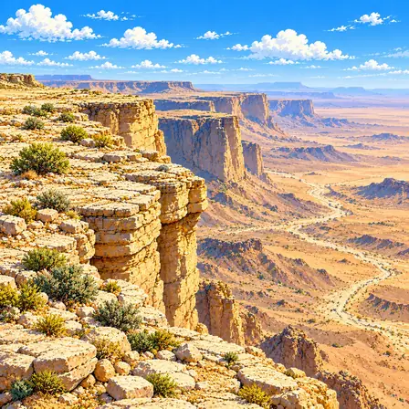
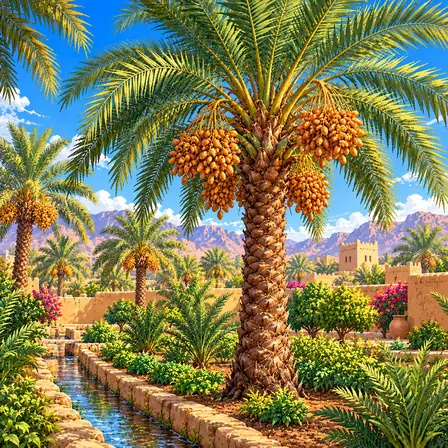
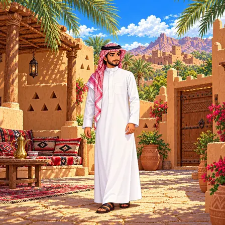
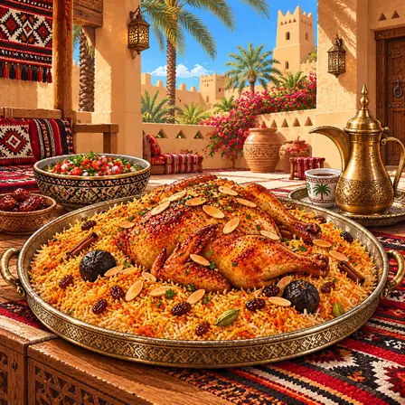
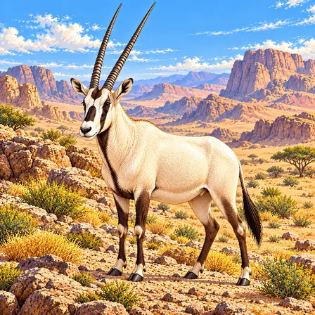
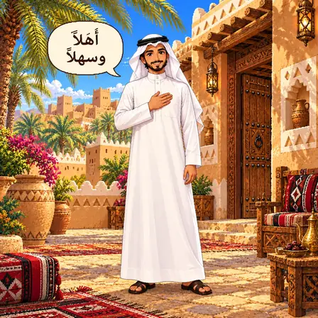

Western mountains and central plateau
The Hijaz and Asir mountains run along the Red Sea, with the high, flat Najd Plateau to their east. The capital, Riyadh, stands on this plateau. The Asir in the southwest gets more rain and more plants.
World Geography Atlas › Asia › West Asia

السعودية
A country of wide deserts and oases · camels.

Most of Saudi Arabia is desert. Tall mountains line its western coast. In the south lies the Rub’ al Khali, where sand dunes go on and on.
Saudi Arabia covers most of the Arabian Peninsula. It divides into the western mountains along the Red Sea, the central Najd Plateau, the Nafud and Rub’ al Khali deserts, and two coasts.
The Hijaz and Asir mountains run along the Red Sea, with the high, flat Najd Plateau to their east. The capital, Riyadh, stands on this plateau. The Asir in the southwest gets more rain and more plants.
The Rub’ al Khali in the southeast is an endless sea of dunes covering about 430,000 km² within Saudi Arabia. A long ribbon of sand, the Dahna, links it to the Nafud in the north.
Source: Saudipedia, Al-Rub’ Al-Khali (Empty Quarter) Desert · Saudipedia, Deserts of Saudi Arabia
The Red Sea lies to the west and the Persian Gulf to the east. On the Red Sea side, the narrow Tihama plain sits between mountains and sea; the east coast is low, salty flatland.
A wadi is a dry valley that carries water only briefly after rain. The Red Sea also holds islands such as the Farasan Islands.
In the west, the Arabian Shield exposes very old igneous and metamorphic rock. Eastward, layers of sedimentary rock lie on top, visible in the Tuwaiq escarpment near Riyadh.
Source: USGS, Geology of the Arabian Peninsula · Visit Saudi, Edge of the World
The Red Sea formed as the Arabian and African plates moved apart. That is why the west has volcanic fields and faults where the ground has broken.
A city, a heritage site, nature, a plant, culture, food, an animal, a greeting and the flag of Saudi Arabia, each drawn as pixel art.

Riyadh is the capital of Saudi Arabia. It is a big city on high ground in the middle of the desert. It has striking buildings like Kingdom Centre, which has a big opening near its top.
Riyadh, Saudi Arabia’s capital, stands on the inland Najd Plateau. Kingdom Centre, with a large opening near its top, and Al Faisaliah, a pointed tower with a sphere, are the city’s landmark towers. Alongside modern streets, the city preserves historic buildings such as Al Masmak. It became the capital when the Kingdom of Saudi Arabia was founded in 1932.

Hegra is a place with old tombs carved into huge rocks. About 2,000 years ago, people carved doors and pillars into the rock faces. It was the first World Heritage Site in Saudi Arabia.
Hegra is a Nabataean archaeological site in the AlUla region of northwestern Saudi Arabia. Rock-cut tombs, decorated facades, inscriptions and wells reveal architectural and water-management skills. Among them, Qasr al-Farid is a tomb carved into a single large outcrop that stands alone. Hegra became Saudi Arabia’s first UNESCO World Heritage property in 2008.

Edge of the World is a cliff whose name says it all. From the top you can look down on endless flat land. Deserts have cliffs and valleys like this, too.
The Edge of the World is a well-known viewpoint along the Tuwaiq escarpment near Riyadh. A flat plateau ends in steep rock faces above lower plains. Limestone layers, fractures and dry valleys reflect deposition and long-term erosion. Deserts include rocky plateaus and escarpments as well as dunes.

The date palm is a tall tree that grows in desert oases. Bunches of sweet fruit hang below its feather-like leaves. People in Saudi Arabia love to eat dates.
Date palms have long pinnate leaves, with narrow leaflets along both sides of a central axis. Fruit grows in clusters beneath the crown, varying in color and texture with variety and ripeness. Date palms are important to Saudi oasis agriculture and food traditions. Although adapted to heat, cultivated trees still need suitable water supplies and management to produce fruit.

The thobe is a long white robe that reaches the ankles. On the head goes a red-and-white checked cloth called a shemagh. A black cord called an agal holds the headcloth in place.
The thobe is a long garment worn by men in Saudi Arabia. White is widely recognized, but fabric and color may vary with season and use. A white ghutra or red-and-white patterned shemagh is secured with a black cord called an agal. These garments appear in everyday life as well as formal settings.

Kabsa is spiced rice topped with chicken or lamb. It is served on a big tray for everyone to share. It is often made to welcome guests.
Kabsa is a prominent Saudi dish made with rice and chicken or other meat. The rice takes on flavors from meat and spices, while ingredients and methods vary by household and region. It is often served with long-grain rice, chicken, raisins, nuts and dried lime. Sharing a large platter or tray is associated with welcoming guests.

The Arabian oryx is a white antelope with two long, straight horns. It can handle the desert heat well. It once disappeared from the wild, but people protected it so it could live there again.
The Arabian oryx is an antelope adapted to dry environments of the Arabian Peninsula. Its pale body, dark face and leg markings, and pair of slender horns distinguish it. It feeds on grasses and shrubs and gets moisture from plants, so it can go a long time without drinking. After disappearing from the wild, conservation breeding and reintroduction restored herds in several areas. Saudi protected areas participate in these restoration efforts.

Ahlan wa sahlan means "welcome" in Arabic. People say it to greet guests warmly. Arabic is read and written from right to left.
أهلاً وسهلاً, pronounced “ahlan wa sahlan,” is used to mean “welcome.” It can be heard when receiving guests in Saudi Arabia and elsewhere in the Arabic-speaking world. Arabic is written and read from right to left, and many letters join within words. It goes hand in hand with welcoming guests with tea or coffee.

Saudi Arabia's flag has white writing and a sword on a green background. The writing is an important sentence in Islam. The flag is made so the writing reads correctly from both sides.
Saudi Arabia's flag has a white Arabic phrase and a single sword on a green field. The phrase is the Islamic statement of faith (the shahada), and green is a color treasured in Islam. Because Arabic is read from right to left, the flag is made from two layers of cloth so the writing reads correctly from both sides. Because it is a sacred flag with holy words, this is a country that does not lower its flag even to show mourning. Its present form was set in 1973.